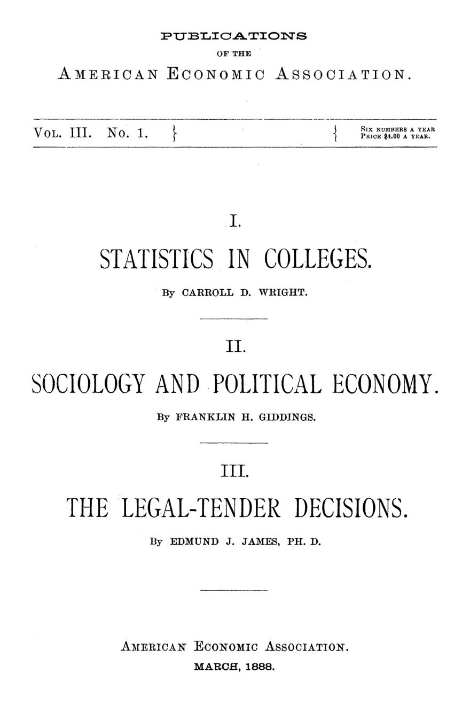

Contar, classificar, julgar: três textos de Boston, 1887
Leitura: 8 min
Em 1887, um estatístico pediu cursos de estatística, um economista quis a economia como ciência do organismo social e um professor defendeu o papel-moeda de curso forçado.


Catorze anos de trabalho com estatística oficial, e nenhum dia sem sentir falta de formação. A confissão é de Carroll D. Wright, comissário do Bureau of Labor dos Estados Unidos, numa sessão conjunta das associações americanas de economia e de história, em Cambridge, Massachusetts, em 24 de maio de 1887. Wright lamentou ter como única alma mater o próprio escritório de estatística — e disse isso em público, diante de uma plateia de professores.
A American Economic Association reuniu três falas daquele encontro de maio, em Boston e Cambridge, no primeiro número do volume 3 de suas Publications, datado de março de 1888. A assinatura custava US$ 4 por ano, por seis números. Os textos não dialogam entre si de forma explícita: um trata de ensino, outro de método, o terceiro de direito constitucional da moeda.
Há, porém, um fio comum. Wright quer números colhidos por gente treinada e sem tese a defender. Franklin H. Giddings quer uma economia que descreva antes de deduzir e que trate a natureza humana como algo que muda com o próprio trabalho. Edmund J. James, professor da Universidade da Pensilvânia, quer que a Suprema Corte julgue a lei, e não a conveniência da política monetária. Nos três casos, a pergunta de fundo é a mesma: o que separa o juízo técnico da opinião do momento?
Por que os Estados Unidos não formavam estatísticos?
Wright começa por uma comparação desconfortável. Na Europa continental, estatísticos entravam na carreira depois de formação sistemática; nos Estados Unidos, chegavam ao ofício por acaso. A melhor escola europeia, diz ele, era o seminário ligado ao bureau prussiano de estatística, fundado cerca de um quarto de século antes por Ernst Engel. Ali, graduados de alto nível trabalhavam sem remuneração nos órgãos do governo e assistiam a aulas, quase sempre à noite.
O inventário americano é curto. Richard T. Ely dava estatística dentro de um curso de economia na Johns Hopkins; Davis R. Dewey, no Massachusetts Institute of Technology, propunha aos alunos problemas como estimar a margem de erro do censo para crianças com menos de um ano. O ensino mais sistemático estava no Columbia College, com Richmond M. Smith, desde 1882.
O paradoxo, para Wright, é que o estatístico americano tinha mais oportunidades do que o europeu. Os censos federais iam muito além da contagem da população, e o próprio Engel lhe dissera que trocaria a formação prussiana pelas possibilidades americanas. Faltava método. Ninguém sabia ao certo o que o censo devia registrar como “capital investido”, nem se os divórcios deviam ser comparados com os casamentos do ano, com a população ou com os casais vivos.
“As mentiras da estatística são mentiras não científicas.” (“The lies of statistics are unscientific lies.”)
A proposta é prática. A cadeira de economia política podia absorver a estatística sem prejuízo dos demais cursos; os governos deviam admitir estudantes como auxiliares nos escritórios oficiais; e o censo, feito a cada dez anos, não devia ficar nas mãos de quem nada sabe de estatística. O estatístico, conclui Wright, não pode ser advogado de uma causa.
A economia é uma física ou uma biologia?
Giddings, que falou na reunião anual em Boston em 23 de maio de 1887, começa por um menino. Quem faz agulhas desde a infância é, aos 16 anos, uma maravilha de coordenação ajustada àquela tarefa; aos 30, já não aprende destreza nova. É a imagem do que ele chama de organismo: a atividade molda a estrutura, e a estrutura dirige a atividade.
Daí a crítica à economia dedutiva na versão de Cairnes, para quem o economista partia de causas últimas já conhecidas. Para Giddings, a frase é “pré-darwiniana”. Se a natureza humana e as instituições mudam com o modo de produzir, o economista tem dois problemas, e não um: o que a sociedade produz e distribui, e como isso a transforma de volta. O movimento operário que se espalhava pelo mundo era, para ele, a prova.
O autor não despreza a dedução. Lamenta a briga de métodos, cita Jevons a favor do uso alternado de indução e dedução e reserva à matemática de Gossen, Jevons e Walras o que chama de “física econômica”: oferta e demanda, custo de produção, preços, ritmos do crédito. O erro dos economistas matemáticos, diz, é supor que a economia se resume a isso.
A tese mais ousada está na teoria do valor. Valor não seria razão de troca, mas utilidade medida, assim como peso é gravitação medida. A troca vira processo secundário de produção: pioneiros que tecem a própria roupa produzem riqueza sem conhecer valor no sentido econômico.
“essa definição da economia política que a chama de ciência das trocas é absurda” (“that definition of Political Economy which calls it the science of exchanges, is absurd”)
O plano final divide a disciplina em três partes: a descrição comparada de instituições e costumes; a produção e a distribuição, tanto pelo esforço individual quanto pela ação consciente da comunidade, via lei e opinião pública; e as reações da economia sobre o organismo social. Para ilustrar a última, Giddings opõe a catedral medieval, feita só de materiais e trabalho perfeitos, ao culto moderno do barato.
A Suprema Corte deve julgar a lei ou a política monetária?
Edmund J. James trata dos Legal-Tender Cases, as decisões sobre o poder do Congresso de dar curso forçado a notas do Tesouro — isto é, obrigar credores a aceitá-las em pagamento de dívidas. Em 7 de fevereiro de 1870, em Hepburn vs. Griswold, a Corte declarou essas leis inconstitucionais para dívidas anteriores a elas. Presidia o tribunal o homem que, como secretário do Tesouro, fora o principal responsável por aquela legislação.
A reviravolta veio rápido. A renúncia do juiz Grier e uma nova cadeira criada por lei abriram duas vagas, preenchidas por Strong e Bradley. Strong já defendera a constitucionalidade das leis na Suprema Corte da Pensilvânia. Em Knox vs. Lee, a decisão foi revertida. A acusação de manobra circulou; James reproduz carta de George F. Hoar segundo a qual os dois nomes foram enviados ao Senado antes da primeira decisão.
James nota que o raciocínio mudou mais do que o placar. As duas primeiras decisões giraram em torno de um argumento econômico: se o curso forçado melhorava ou não as notas como moeda. A terceira deixou a conveniência de lado e perguntou apenas se o Congresso tinha o poder.
“Ela tem de decidir uma questão de direito, e não de política.” (“It has to decide a question of law and not of policy”)
O restante é exegese. Na Convenção de 1787, em 16 de agosto, a expressão “and emit bills of credit” foi suprimida do projeto por nove estados a dois, mas o registro do debate, segundo James, não revela intenção comum. E “cunhar moeda”, na linguagem da época, designava o poder soberano sobre o meio circulante. O autor apoia a decisão de 1884 e confia mais na educação do público do que em proibições constitucionais contra o abuso do papel-moeda.
Na minha leitura
Na minha leitura, os três textos tratam da mesma fronteira: onde termina o juízo técnico e começa a preferência. Wright quer o estatístico que aceita o resultado mesmo quando contraria sua doutrina. Giddings aceita a matemática, mas lembra que ela descreve um organismo que muda enquanto é medido. James pede ao juiz que não use a Constituição para vetar uma política de que discorda.
O dilema continua aberto. Institutos de estatística, bancos centrais e cortes constitucionais vivem da mesma promessa — a de que seu juízo não é simples opinião vestida de método. James apostava na educação do público como última defesa contra o abuso da moeda; Wright, na formação de quem produz os números. São apostas complementares. Sem dados confiáveis, o público não tem como julgar; sem um público capaz de julgar, nenhum mandato técnico se sustenta por muito tempo.
Glossário
- Curso forçado (legal tender)
- Qualidade legal que obriga o credor a aceitar determinada moeda ou nota em pagamento de dívidas.
- Greenbacks
- Notas do Tesouro americano emitidas na Guerra Civil, objeto dos Legal-Tender Cases.
- Bills of credit
- Títulos ou notas emitidos com base no crédito do governo, que podem circular como papel-moeda.
- Seminário estatístico
- Escola prática ligada ao bureau prussiano de estatística, que combinava aulas e trabalho nos órgãos oficiais.
- Física econômica
- Para Giddings, a parte da economia tratável pelo método matemático: equilíbrio de oferta, demanda, custos e preços.
- Abstração relativa
- Subordinar no estudo um elemento que é secundário no fenômeno, sem esquecê-lo por completo.
Artigos desta edição
- The Study of Statistics in Colleges — Carroll D. Wright, comissário do Bureau of Labor dos Estados Unidos (pp. 5–28). Wright compara a formação sistemática de estatísticos na Europa, com destaque para o seminário do bureau prussiano criado por Ernst Engel, ao improviso americano. Lista os poucos cursos existentes nos Estados Unidos — Johns Hopkins, MIT, Columbia, Harvard — e mostra, com exemplos do censo, como a falta de método produz números enganosos. Propõe incluir a estatística na cadeira de economia política, dividida em fundamentos, prática e análise, e abrir os escritórios oficiais a estudantes. O estatístico, insiste, não deve ser advogado de nenhuma tese. JSTOR
- The Sociological Character of Political Economy — Franklin H. Giddings (pp. 29–47). Giddings propõe tratar a economia política como ciência de fenômenos orgânicos: a atividade econômica molda a natureza humana e as instituições, que por sua vez condicionam a produção seguinte. Critica a abstração absoluta da escola dedutiva, sem rejeitar a dedução nem a matemática, que reserva à “física econômica”. Define valor como utilidade medida, trata a troca como produção secundária e reorganiza a disciplina em três divisões: descrição comparada, produção e distribuição (individual e social) e reações da economia sobre o organismo social. JSTOR
- Some Considerations on the Legal-Tender Decisions — Edmund J. James, professor da Universidade da Pensilvânia (pp. 49–80). James analisa as três decisões da Suprema Corte sobre o curso forçado das notas do Tesouro: Hepburn vs. Griswold (1870, 5 a 3), Knox vs. Lee (5 a 4) e Juilliard vs. Greenman (1884, 8 a 1). Discute a presunção de constitucionalidade das leis do Congresso, a influência das nomeações sobre a Corte e o debate da Convenção de 1787 sobre os bills of credit. Conclui que o poder de cunhar moeda abrange a soberania sobre o meio circulante e que a última decisão é sólida como questão de direito. JSTOR
Fontes
- The Study of Statistics in Colleges (pp. 5–28). JSTOR · Internet Archive (PDF)
- The Sociological Character of Political Economy (pp. 29–47). JSTOR · Internet Archive (PDF)
- Some Considerations on the Legal-Tender Decisions (pp. 49–80). JSTOR · Internet Archive (PDF)
- Sumário da edição no JSTOR: Publications of the American Economic Association, vol. 3, nº 1.
Documento em domínio público (EUA, publicado antes de 1931), via JSTOR Early Journal Content e Internet Archive. Resumo e comentário do autor deste site, sem afiliação com a American Economic Association. Encontrou um erro? Escreva: a correção é publicada no próprio texto, com data.
← Nº 11 · Água, gás, luz e bonde: quem deve servir a cidade? Nº 13 · O capital muda de corpo, não de dono: Clark e a natureza do capital →